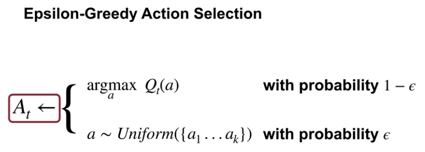
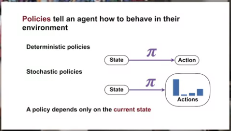
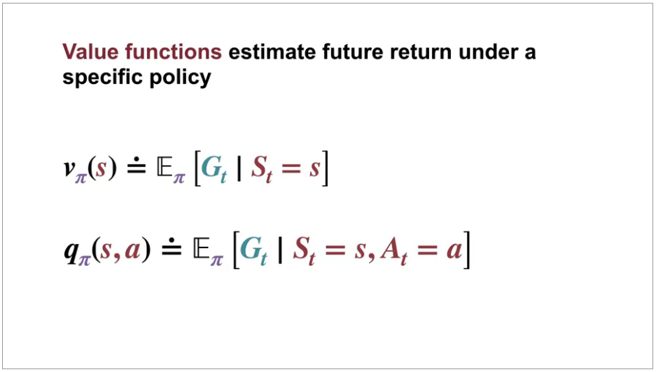
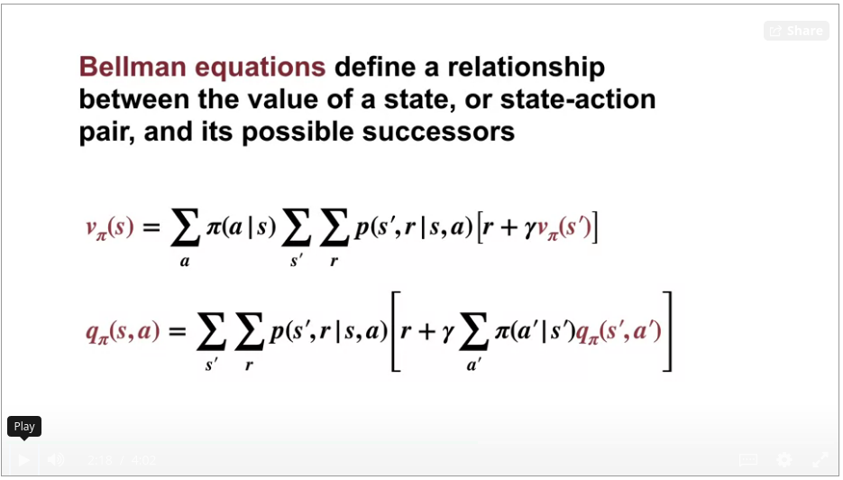
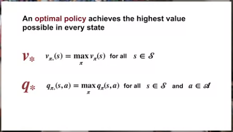
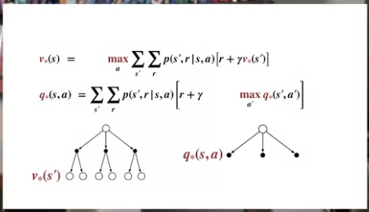
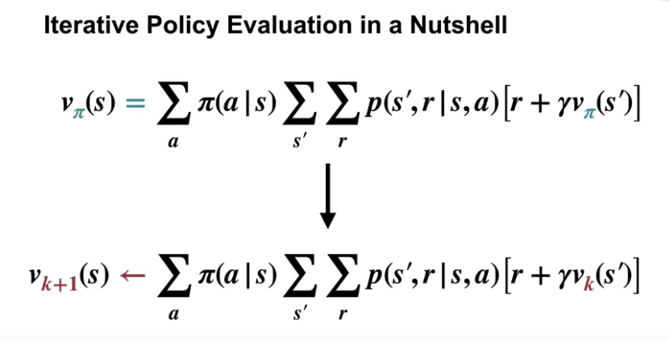
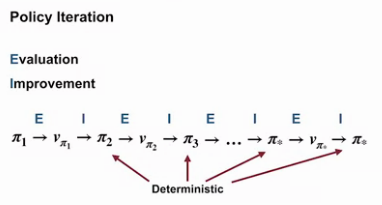
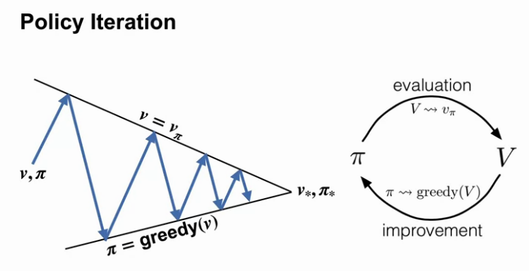

Coursera website: course 1 - Fundamentals of Reinforcement Learning of Reinforcement Learning Specialization
my notes on course 2 - Sample-based Learning Methods, course 3 - Prediction and Control with Function Approximation, course 4 - A Complete Reinforcement Learning System (Capstone)
4 courses on 16 weeks by Martha White and Adam White.
specialization roadmap
course 1 - we begin our study with multi-arm bandit problems. Here, we get our first taste of the complexities of incremental learning, exploration, and exploitation. After that, we move onto Markov decision processes to broaden the class of problems we can solve with reinforcement learning methods. Here we will learn about balancing short-term and long-term reward. We will introduce key ideas like policies and value functions using almost all RL systems. We conclude Course 1 with classic planning methods called dynamic programming. These methods have been used in large industrial control problems and can compute optimal policies given a complete model of the world.
course 2 - In Course 2, we built on these ideas and design algorithms for learning without a model of the world. We study three classes of methods designed for learning from trial and error interaction. We start with Monte Carlo methods and then move on to temporal difference learning, including Q learning. We conclude Course 2 with an investigation of methods for planning with learned models.
course 3 - In Course 3, we leave the relative comfort of small finite MDPs and investigate RL with function approximation. Here we will see that the main concepts from Courses 1 and 2 transferred to problems with larger infinite state spaces. We will cover feature construction, neural network learning, policy gradient methods, and other particularities of the function approximation setting.
course 4 - The final course in this specialization brings everything together in a Capstone project. Throughout this specialization, as in Rich and Andy’s book, we stress a rigorous and scientific approach to RL. We conduct numerous experiments designed to carefully compare algorithms. It takes careful planning and a lot of hard work to produce a meaningful empirical results. In the Capstone, we will walk you through each step of this process so that you can conduct your own scientific experiment. We will explore all the stages from problem specification, all the way to publication quality plots. This is not just academic. In real problems, it’s important to verify and understand your system. After that, you should be ready to test your own new ideas or tackle a new exciting application of RL in your job. We hope you enjoyed the show half as much as we enjoyed making it for you.
Alberta is in Canada.
5/3/21 - Course 1 - Week 1 - An introduction to Sequential Decision-Making
I have set recommended goals 3 times a week.
about supervised learning, unsupervised learning and RL
You might wonder what’s the difference between supervised learning, unsupervised learning, and reinforcement learning? The differences are quite simple. In supervised learning we assume the learner has access to labeled examples giving the correct answer. In RL, the reward gives the agent some idea of how good or bad its recent actions were. You can think of supervised learning as requiring a teacher that helps you by telling you the correct answer. A reward on the other hand, is like having someone who can identify what good behavior looks like but can’t tell you exactly how to do it. Unsupervised learning sounds like it could be related but really has a very different goal. Unsupervised learning is about extracting underlying structure in data. It’s about the data representation. It can be used to construct representations that make a supervised or RL system better. In fact, as you’ll see later in this course, techniques from both supervised learning and unsupervised learning can be used within RL to aid generalization
industrial control
So I think the place we’re really going to see it take off is an industrial control. In industrial control, we have experts that are really looking for ways to improve the optimal- how well their systems work. So we’re going to see it do things like reduce energy costs or save on other types of costs that we have in these industrial control systems. In the hands of experts, we can really make these algorithms work well in the near future. So I really see it as a tool that’s going to facilitate experts in their work rather than say, doing something like replacing people or automating them away.
Reinforcement Learning Textbook
as always, Reinforcement Learning: An introduction (Second Edition) by Richard S. Sutton and Andrew G. Barto is THE reference. I didn’t know that Adam White was student from Sutton. Lucky guy ;)
K-armed Bandit problem

Starts with reading of RLbook p25-36 (Chapter 2 Multi-armed Bandits)
Evaluative vs instructive feedback. Nonassociative refers to cases where you take one action per state. At the end there is a generalization where bandit problem becomes associative, that is, when actions are taken in more than one situation.
It is a stationary case meaning that value of actions are fixed during experiences. If the bandit task were nonstationary, that is, the true values of the actions changed over time. In this case exploration is needed even in the deterministic case to make sure one of the nongreedy actions has not changed to become better than the greedy one.
sample-average action-value estimates
\[ Q_t(a) = \frac{\text{sum of rewards when } \mathit{a} \text{ taken prior to }\mathit{t}}{\text{number of times } \mathit{a} \text{ taken prior to }\mathit{t}} \\ Q_t(a) = \frac{\displaystyle\sum_{i=1}^{t-1} R_i.\mathcal{1}_{A_i=a}}{\displaystyle\sum_{i=1}^{t-1} \mathcal{1}_{A_i=a}} \]
\(\epsilon\)-greedy action selection
\[ A_t=\underset{a}{\mathrm{argmax}}{\text{ }Q_t(a)} \]
With nonstationary problem, we want to give more weights to recent rewards. It can be done with \[ Q_{n+1}=Q_n+\alpha[R_n-Q_n] \] Where \[\alpha\] is a constant step-size parameter, \[\alpha \in [0,1]\]. So it can be written that way \[ Q_{n+1}=(1-\alpha)^nQ_1+\displaystyle\sum_{i=1}^{n} \alpha(1-\alpha)^{n-i}R_i \] . Weighted average because the sum of the weights is 1.
2 other topics are discussed: optimistic initial values (that can push exploration in 1st steps) and upper-confidence-bound (UCB) action selection. With optimistic initial values the idea is too have high initial value for reward so that the 1st actions are disappointing pushing for explorations. With UCB
\[ A_t= \underset{a} {\mathrm{argmax}} {\text{ }\bigg[Q_t(a)+c\sqrt{\frac{\ln t}{N_t(a)}}\bigg]} \]
The idea of this upper confidence bound (UCB) action selection is that the square-root term is a measure of the uncertainty or variance in the estimate of a’s value. The quantity being max’ed over is thus a sort of upper bound on the possible true value of action a, with c determining the confidence level. Each time a is selected the uncertainty is presumably reduced: N t (a) increments, and, as it appears in the denominator, the uncertainty term decreases. On the other hand, each time an action other than a is selected, t increases but N t (a) does not; because t appears in the numerator, the uncertainty estimate increases. The use of the natural logarithm means that the increases get smaller over time, but are unbounded; all actions will eventually be selected, but actions with lower value estimates, or that have already been selected frequently, will be selected with decreasing frequency over time.
Exploration vs Exploitation trade-off
How do we choose when to explore, and when to exploit? Randomly

Assignement
implementation of greedy agent, \(\epsilon\)-greedy agent. Comparisons. Various \(\epsilon\) values, various step-sizes (1/N(a), …)
notebooks in github
end of C1W1 (course 1 week 1)
5/7/21 - Course 1 - Week 2 - Markov Decision Process
Module 2 Learning Objectives
Lesson 1: Introduction to Markov Decision Processes
Understand Markov Decision Processes, or MDPs
Describe how the dynamics of an MDP are defined
Understand the graphical representation of a Markov Decision Process
Explain how many diverse processes can be written in terms of the MDP framework
Lesson 2: Goal of Reinforcement Learning
Describe how rewards relate to the goal of an agent
Understand episodes and identify episodic tasks
Lesson 3: Continuing Tasks
Formulate returns for continuing tasks using discounting
Describe how returns at successive time steps are related to each other
Understand when to formalize a task as episodic or continuing
Lesson 1: Introduction to Markov Decision Processes
Reading chapter 3.1 to 3.3 (p47-56) in Sutton’s book
Finite Markov Decision Processes
- 3.1 - the Agent-Environment Interface
- 3.2 - Goals and Rewards
- 3.3 - Returns and Episodes
In a Markov decision process, the probabilities given by p completely characterize the environment’s dynamics. That is, the probability of each possible value for \(S_t\) and \(R_t\) depends only on the immediately preceding state and action, \(S_{t-1}\) and \(A_{t-1}\) , and, given them, not at all on earlier states and actions.
\[ p(s',r|s,a) \doteq Pr\{S_t=s', R_t=r|S_{t-1}=s, A_{t-1}=a\} \]
The state must include information about all aspects of the past agent–environment interaction that make a difference for the future. In general, actions can be any decisions we want to learn how to make, and the states can be anything we can know that might be useful in making them.
The agent–environment boundary represents the limit of the agent’s absolute control, not of its knowledge.
Goal can be well thought of as the maximization of the expected value of the cumulative sum of a received scalar signal (called reward). The reward signal is your way of communicating to the agent what you want it to achieve, not how you want it achieved.
Expected return \(G_t\) is defined as some specific function of the reward sequence. In the simplest case the return is the sum of the rewards: \[ G_t \doteq R_{t+1}+R_{t+2}+R_{t+3}+...+R_{T} \] where \(T\) is the final time step.
With continuing tasks, we can have \(T=\infty\), we can then introduce discounting. Agent chooses \(A_t\) to maximize the expected discounted return: \[ G_t \doteq R_{t+1}+\gamma R_{t+2}+\gamma^2 R_{t+3}+...=\displaystyle\sum_{k=0}^{\infty} \gamma^k R_{t+k+1} \] where \(\gamma\) is called the discount rate. \[ G_t = R_{t+1}+\gamma G_{t+1} \] Video MDP by Martha. By the end of this video: Understand Markov Decision Process (MDP), Describe how the dynamics of an MDP are defined.
Martha highlights differences between k-armed bandit and MDP. The k-armed bandit agent is presented with the same situation at each time and the same action is always optimal. In many problems, different situations call for different responses. The actions we choose now affect the amount of reward we can get into the future. In particular if state changes, k-armed bandit don’t adapt. It is why we need MDP.
Video examples of MDPs by Adam . By the end of this video: Gain experience formalizing decision-making problems as MDPs, Appreciate the flexibility of the MDP formalism.
Adam uses 2 examples: robot recycling cans and robot arm.
Lesson 2: Goal of Reinforcement Learning
Video the Goal of Reinforcement Learning by Adam. By the end of this video: Describe how rewards relate to the goal of an agent, Identify episodic tasks.
With MDP, agents can have long-term goals.
Video the Reward Hypothesis by Michael Littman.
He gives a nice idea when defining reward hypothesis: a contrast between the simplicity of the idea of rewards with the complexity of the real world.
Lesson 3: Continuing Tasks
Video Continuing Tasks by Martha. By the end of this video: Differentiate between episodic and continuing tasks. Formulate returns for continuing tasks using discounting. Describe how returns at successive time steps are related to each other.
Adam uses a link to Sutton’s book., This is a 2020 version of this book.
Video Examples of Episodic and Continuing Tasks by Martha. By the end of this video: Understand when to formalize a task as episodic or continuing.
Martha gives 2 examples: one of an episodic tasks where episode ends when player is touched by an enemy, one of continuous tasks where an agent accepts or rejects tasks depending on priority and servers available (never ending episode).
Weekly assessment.
This is a quizz and a peer-graded assignment. I had to describe 3 MDPs with all its detail (states actions, rewards).
5/10/21 - Course 1 - Week 3 - Value Functions & Bellman Equations
Module 3 Learning Objectives
Lesson 1: Policies and Value Functions
- Recognize that a policy is a distribution over actions for each possible state
- Describe the similarities and differences between stochastic and deterministic policies
- Identify the characteristics of a well-defined policy
- Generate examples of valid policies for a given MDP
- Describe the roles of state-value and action-value functions in reinforcement learning
- Describe the relationship between value functions and policies
- Create examples of valid value functions for a given MDP
Lesson 2: Bellman Equations
- Derive the Bellman equation for state-value functions
- Derive the Bellman equation for action-value functions
- Understand how Bellman equations relate current and future values
- Use the Bellman equations to compute value functions
Lesson 3: Optimality (Optimal Policies & Value Functions)
- Define an optimal policy
- Understand how a policy can be at least as good as every other policy in every state
- Identify an optimal policy for given MDPs
- Derive the Bellman optimality equation for state-value functions
- Derive the Bellman optimality equation for action-value functions
- Understand how the Bellman optimality equations relate to the previously introduced Bellman equations
- Understand the connection between the optimal value function and optimal policies
- Verify the optimal value function for given MDPs
Lesson 1: Policies and Value Functions
Reading chapter 3.5 to 3.8 (p58-67) in Sutton’s book
Almost all reinforcement learning algorithms involve estimating value functions—functions of states (or of state–action pairs) that estimate how good it is for the agent to be in a given state (or how good it is to perform a given action in a given state).
Searching for additional informations, I have fallen into ShangtongZhang page and repos. Only 2 of them but seem to be great: reinforcement-learning-an-introduction contains implementations in Python of all concepts from Sutton’s book. DeepRL seems to be a pytorch implementations (DQN, A2C, PPO, …)
Here we see Bellman equation for state-value function \(v_\pi(s)\)
\[ v_\pi(s) \doteq \mathbb{E}[G_t|S_t=s] \\ v_\pi(s) = \displaystyle\sum_{a} \pi(a|s) \displaystyle\sum_{s',r} p(s', r|s, a)\big[r+\gamma.v_\pi(s')\big] \]
Bellman equation for action-value function \(q_\pi(s,a)\)
\[ q_\pi(s,a) \doteq \mathbb{E}[R_{t+1}+\gamma.G_{t+1}|S_t=s, A_t=a] \\ q_\pi(s, a) = \displaystyle\sum_{s',r} p(s', r|s, a) \big[ r + \gamma\displaystyle\sum_{a'} \pi(s', a')q_\pi(s',a') \big] \]
Optimal state-value function \(v_*\):
\[ v_*(s)\doteq \max\limits_{\pi} v_\pi(s), \forall s \in S \]
Optimal action-value function \(q_*\): \[ q_*(s,a) \doteq \max\limits_{\pi} q_\pi(s,a) = \mathbb{E}[R_{t+1}+\gamma.v_*(S_{t+1})|S_t=s, A_t=a] \]
We denote all optimal policies by \(\pi_*\)
Bellman optimality equation for \(v_*\)
\[ v_*(s) = \max\limits_{a} \displaystyle\sum_{s', r} p(s',r|s, a)\big[ r + \gamma .v_*(s') \big] \]
Bellman optimality equation for \(q_*\)
\[ q_*(s,a) = \displaystyle\sum_{s',r} p(s', r|s, a) \big[ r + \gamma.\max\limits_{a'} q_*(s',a') \big] \]

Video Specifying Policies by Adam.
By the end of this video, you’ll be able to
Recognize that a policy is a distribution over actions for each possible state, describe the similarities and differences between stochastic and deterministic policies, and generate examples of valid policies for a given MDP or Markup Decision Process.
Video Value Functions by Adam.
By the end of this video, you’ll be able to
describe the roles of the state-value and action-value functions in reinforcement learning, describe the relationship between value-functions and policies, and create examples of value-functions for a given MDP.
Video Rich Sutton and Andy Barto: A brief History of RL
Lesson 2: Bellman Equations
Video Bellman Equation Derivation by Martha
By the end of this video, you’ll be able to derive the Bellman equation for state-value functions, derive the Bellman equation for action-value functions, and understand how Bellman equations relate current and future values.
Video Why Bellman Equations? by Martha
By the end of this video, you’ll be able to use the Bellman equations to compute value functions
Lesson 3: Optimality (Optimal Policies & Value Functions)
Video Optimal Policies by Martha
By the end of this video, you will be able to define an optimal policy, understand how policy can be at least as good as every other policy in every state, and identify an optimal policy for a given MDP.
Video Optimal Value Functions by Martha
By the end of this video, you will be able to derive the Bellman optimality equation for the state-value function, derive the Bellman optimality equation for the action-value function, and understand how the Bellman optimality equations relate to the previously introduced Bellman equations.
Video Using Optimal Value Functions to Get Optimal Policies by Martha
By the end of this video, you’ll be able to understand the connection between the optimal value function and optimal policies and verify the optimal value function for a given MDP
Video week 3 summary by Adam





5/18/21 - Course 1 - Week 4 - Dynamic Programming
Module 4 Learning Objectives
Lesson 1: Policy Evaluation (Prediction)
- Understand the distinction between policy evaluation and control
- Explain the setting in which dynamic programming can be applied, as well as its limitations
- Outline the iterative policy evaluation algorithm for estimating state values under a given policy
- Apply iterative policy evaluation to compute value functions
Lesson 2: Policy Iteration (Control)
- Understand the policy improvement theorem
- Use a value function for a policy to produce a better policy for a given MDP
- Outline the policy iteration algorithm for finding the optimal policy
- Understand “the dance of policy and value”
- Apply policy iteration to compute optimal policies and optimal value functions
Lesson 3: Generalized Policy Iteration
- Understand the framework of generalized policy iteration
- Outline value iteration, an important example of generalized policy iteration
- Understand the distinction between synchronous and asynchronous dynamic programming methods
- Describe brute force search as an alternative method for searching for an optimal policy
- Describe Monte Carlo as an alternative method for learning a value function
- Understand the advantage of Dynamic programming and “bootstrapping” over these alternative strategies for finding the optimal policy
Lesson 1: Policy Evaluation (Prediction)
Reading chapter 4.1, 4.2, 4.3, 4.4, 4.6, 4.7 (pages 73-88) in Sutton’s book (with the help of Solutions_to_Reinforcement_Learning_by_Sutton_Chapter_4_r5.pdf)
A common way of obtaining approximate solutions for tasks with continuous states and actions is to quantize the state and action spaces and then apply finite-state DP methods.
Video Policy Evaluation vs. Control by Martha
By the end of this video you will be able to understand the distinction between policy evaluation and control, and explain the setting in which dynamic programming can be applied as well as its limitations.
Video Iterative Policy Evaluation by Martha
By the end of this video you will be able to outline the iterative policy evaluation algorithm for estimating state values for a given policy, and apply iterative policy evaluation to compute value functions.
The magic here is to turn the bellman equation into an iterative evaluation which converges to \(v_\pi\).

Lesson 2: Policy Iteration (Control)
Video Policy Improvement by Marta
By the end of this video, you will be able to understand the policy improvement theorem, and how it can be used to construct improved policies, and use the value function for a policy to produce a better policy for a given MDP.
Greedified policy is a strict improvement.

Video Policy Iteration by Marta
By the end of this video, you will be able to outline the policy iteration algorithm for finding the optimal policy, understand the dance of policy and value, how policy iteration reaches the optimal policy by alternating between evaluating policy and improving it, and apply policy iteration to compute optimal policies and optimal value functions.


Lesson 3: Generalized Policy Iteration
Video Flexibility of the Policy Iteration Framework by Adam
By the end of this video, you’ll be able to understand the framework of generalized policy iteration, outline value iteration and important special case of generalized policy iteration, and differentiate synchronous and asynchronous dynamic programming methods.
Video Efficiency of Dynamic Programming by Adam
By the end of this video, you’ll be able to describe Monte Carlo sampling as an alternative method for learning a value function. Describe brute force-search as an alternative method for finding an optimal policy. And understand the advantages of dynamic programming and bootstrapping over these alternatives.
The most important takeaway is that bootstrapping can save us from performing a huge amount of unnecessary work by exploiting the connection between the value of a state and its possible successors.
Video Warren Powell: Approximate Dynamic Programming for Fleet Management (Short)
Video Week 4 Summary by Adam
Reading chapter summary Chapter 4.8, (pages 88-89)
Assignment
Optimal Policies with Dynamic Programming
notebooks in github
end of C1W4 (course 1 week 4)
end of course 1 (and with a certificate ;) )